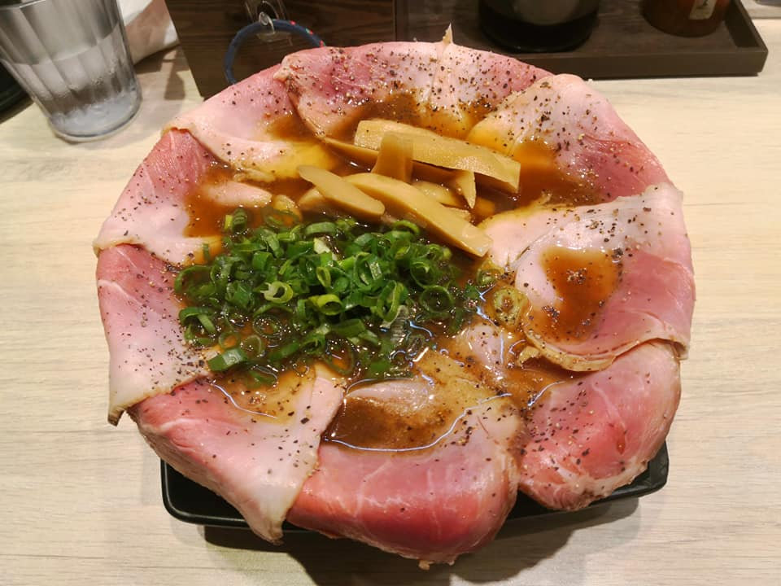
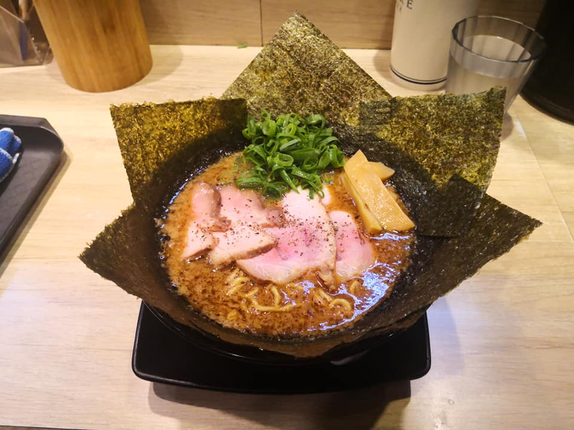
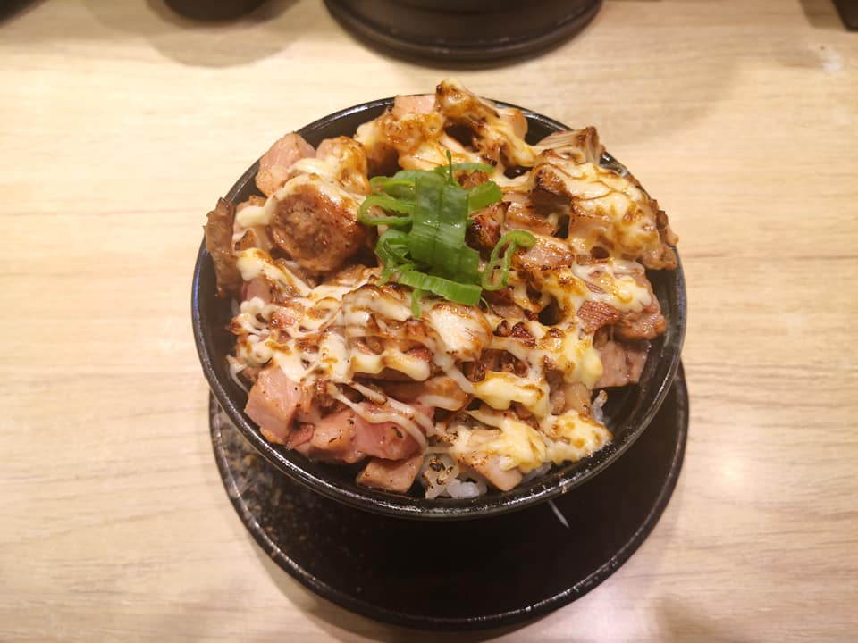

Top 100 of Best Ramen Restaurant in Taiwan from Taiwan Ramen Club.
Char-siu is really tender and broth provides a strong flavor. Soak the char-siu for several seconds before enjoy it is suggested.
Not suggested to ramen freshman. An extra thick broth with thick noodles and seaweed. The thick broth hits the spot of veteran but might be too salty and greasy to ramen freshman. Seaweed + thick broth = justice.
Typical char-siu rice of ramen restaurants. Rice is too wet for me. It costs just $ 50 NTD, so you can order it if you still feel hungry after extra noodles.
